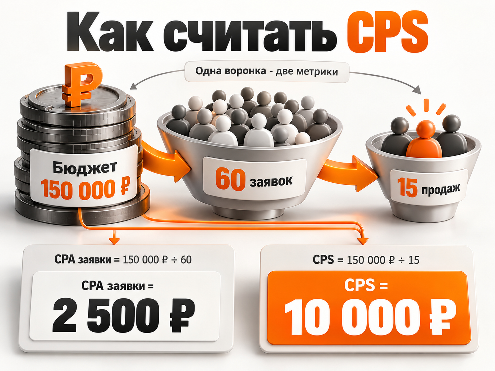
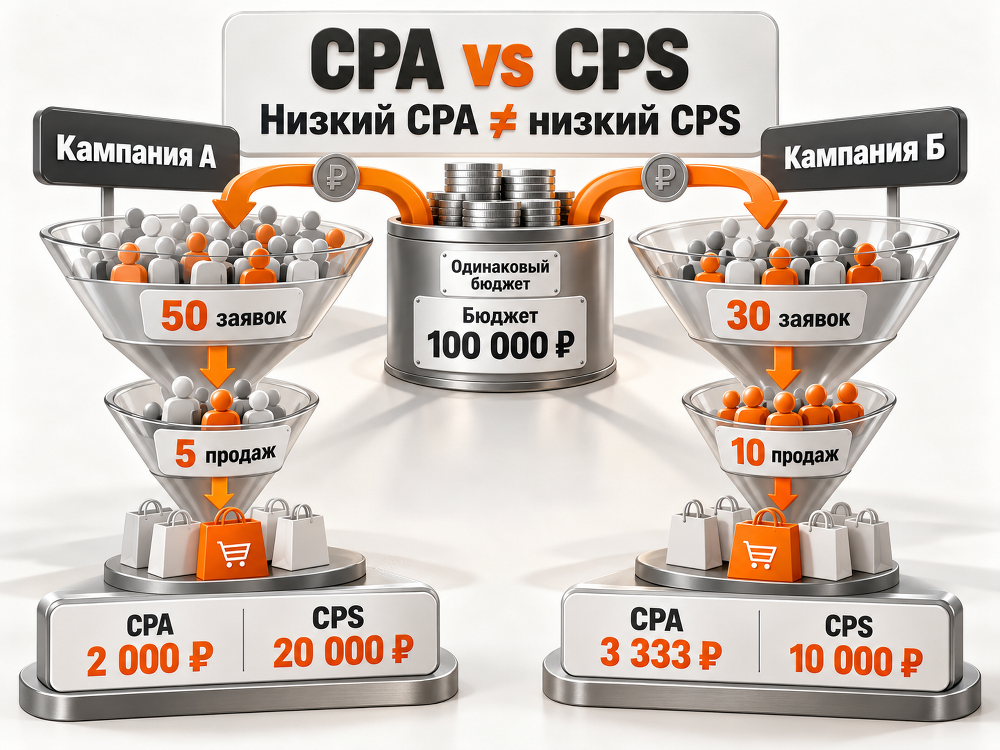
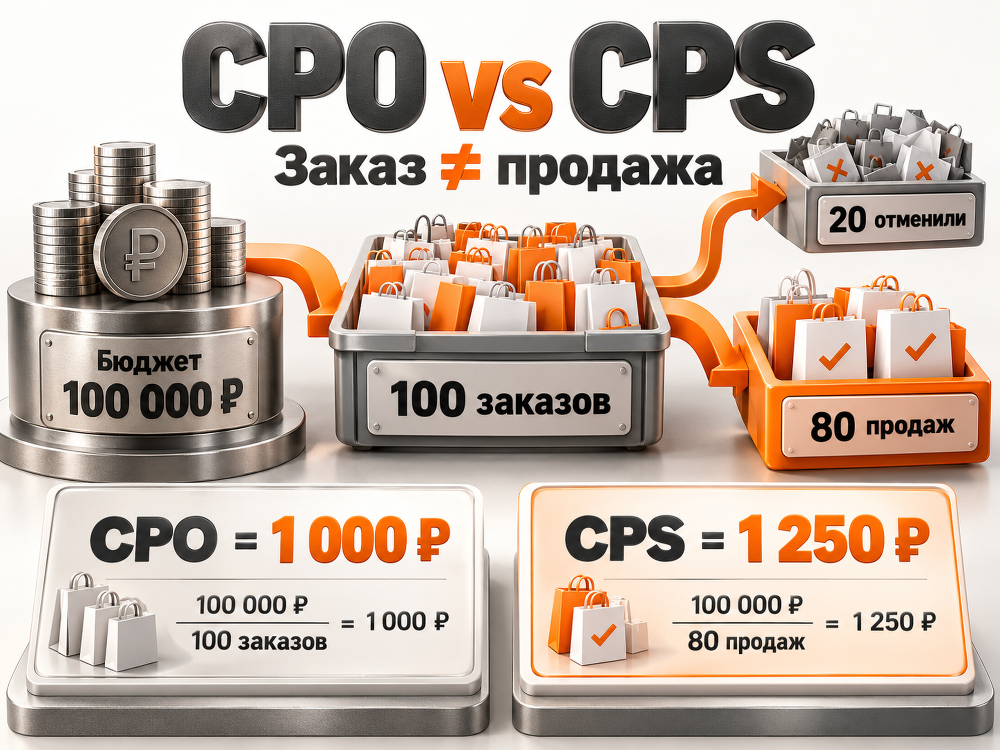
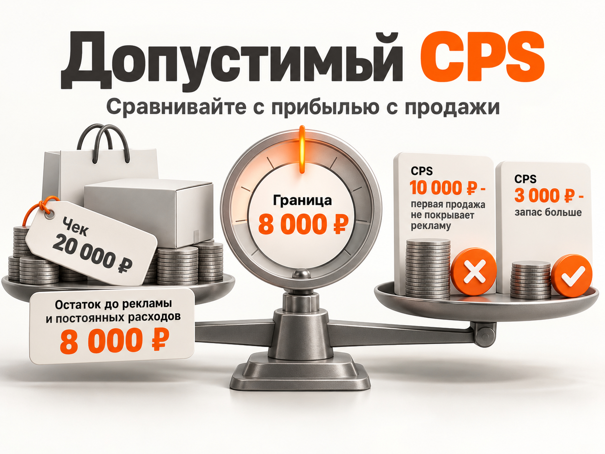
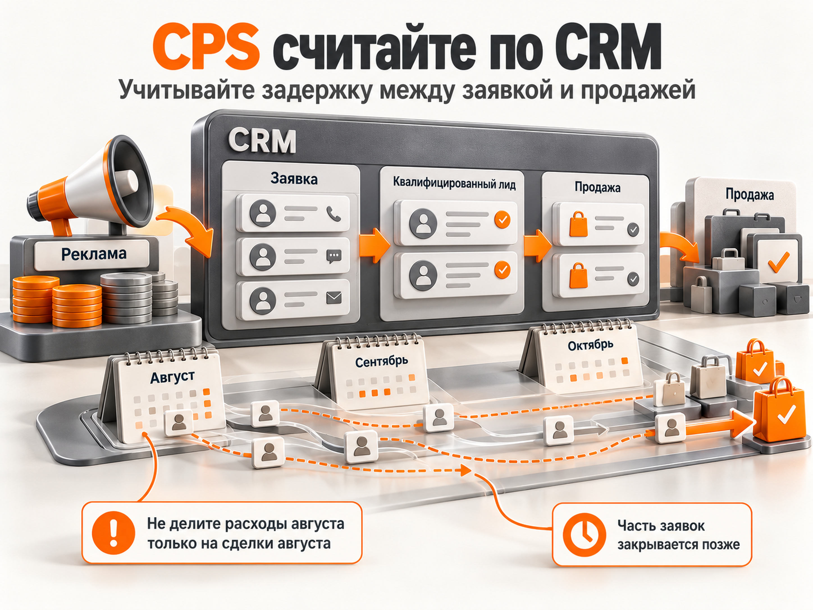

Блог о платном трафике
CPS в маркетинге: что это и как считать стоимость продажи
CPS (Cost Per Sale) - стоимость одной продажи, полученной благодаря рекламе. Чтобы рассчитать показатель, разделите расходы на рекламу на число продаж, которые удалось связать с этой рекламой: CPS = рекламные расходы / количество продаж.
Например, реклама обошлась в 100 000 ₽ и принесла 10 продаж. CPS составил 10 000 ₽. Это не стоимость заявки и не показатель прибыли: он отвечает только на вопрос, сколько в среднем стоило получить одну продажу. Чтобы оценить выгоду, CPS нужно сравнить с экономикой товара или услуги.
Что такое CPS простыми словами
CPS используют в двух значениях. В отчётности это показатель фактических затрат на одну продажу. В партнёрском маркетинге CPS также называют модель оплаты, при которой вознаграждение партнёру начисляется за подтверждённую продажу. Это разные задачи, хотя сокращение одно и то же.
В обычной рекламе пользователь сначала видит объявление, затем переходит на сайт, оставляет заявку, общается с менеджером и только потом может купить. За каждый этап отвечают свои показатели: CPC измеряет стоимость клика, CPL - стоимость лида, CPA - стоимость выбранного действия, а CPS - стоимость состоявшейся продажи.
Главное преимущество CPS: в отличие от стоимости заявки, показатель учитывает конечный результат рекламной воронки. Но без данных о продажах и расходах одного и того же рекламного источника корректно посчитать его нельзя.
Как рассчитать CPS: формула и пример
Для расчёта нужны рекламные расходы и количество подтверждённых продаж, отнесённых к этому источнику. В базовом варианте учитывают расходы непосредственно на размещение рекламы.
CPS = рекламные расходы / число продаж.
Допустим, за месяц в Яндекс Директе потратили 150 000 ₽, получили 60 заявок и закрыли 15 продаж, связанных с этой рекламой.
- Стоимость заявки: 150 000 / 60 = 2 500 ₽.
- Стоимость продажи: 150 000 / 15 = 10 000 ₽.
- Конверсия заявки в продажу: 15 / 60 × 100% = 25%.
Одна и та же кампания дала CPA заявки 2 500 ₽ и CPS 10 000 ₽. Противоречия нет: заявка и продажа - разные результаты.

При сравнении каналов используйте одинаковый состав рекламных затрат и одинаковое правило признания продаж. Если в одном отчёте учитывать только бюджет, а в другом ещё оплату работы подрядчика и сервисов, цифры не будут сопоставимы.
CPS и CPA: в чём разница
CPA (Cost Per Action) - цена выбранного целевого действия, а CPS (Cost Per Sale) - цена продажи. Действием для CPA может быть заявка, звонок, регистрация или покупка. Если целевым действием выбрана покупка, значения CPA и CPS могут совпадать при одинаковых расходах и правилах учёта.
| Показатель | Что измеряет | Расчёт |
|---|---|---|
| CPC | Клик по объявлению | Расходы / клики |
| CPL | Лид, заявку или обращение | Расходы / лиды |
| CPA | Выбранное целевое действие | Расходы / действия |
| CPO | Оформленный заказ | Расходы / заказы |
| CPS | Подтверждённую продажу | Расходы / продажи |
Например, получить 30 заявок за 60 000 ₽ - значит платить в среднем 2 000 ₽ за обращение. Если из них оплачены только шесть сделок, CPS равен 10 000 ₽. По цене лида нельзя автоматически судить о цене покупателя.
Подробнее о широкой метрике CPA - в статье «CPA в Яндекс Директе: что это и как считать стоимость конверсии».
Почему низкая стоимость заявки не гарантирует дешёвую продажу
Дешёвые заявки не всегда выгоднее дорогих: итог зависит от доли обращений, превращающихся в покупку. Сравним две условные кампании с одинаковым бюджетом 100 000 ₽.
| Показатель | Кампания А | Кампания Б |
|---|---|---|
| Рекламные расходы | 100 000 ₽ | 100 000 ₽ |
| Заявки | 50 | 30 |
| Продажи | 5 | 10 |
| Стоимость заявки | 2 000 ₽ | ≈3 333 ₽ |
| Конверсия заявки в продажу | 10% | ≈33,3% |
| CPS | 20 000 ₽ | 10 000 ₽ |
У кампании А заявка дешевле, но CPS вдвое выше. Кампания Б приводит меньше обращений, зато больше покупателей на тот же бюджет. Такой результат может объясняться качеством трафика, предложением или обработкой заявок - по одним этим цифрам точную причину определить нельзя.

Практический вывод: оптимизировать рекламу только на минимальную стоимость обращения опасно. Стоит одновременно оценивать цену лида, качество лидов, конверсию в сделку и CPS. Отдельно об этом - в материале «Конверсия лида в продажу».
Как связаны CPA заявки, конверсия и CPS
Если известна доля лидов, дошедших до покупки, CPS можно рассчитать через стоимость заявки.
CPS = стоимость заявки / конверсия заявки в продажу, где конверсия записана долей, а не процентным числом.
Допустим, лид стоит 2 000 ₽ и 20% лидов завершаются покупкой. Тогда CPS = 2 000 / 0,20 = 10 000 ₽. Если при той же цене лида конверсия упадёт до 10%, стоимость продажи вырастет до 20 000 ₽.
Эта связь помогает понять, где возникла проблема. Если цена лида не изменилась, а CPS вырос, нужно проверить не только рекламу, но и обработку обращений, квалификацию заявок, условия покупки и работу отдела продаж.
Расчёт через конверсию справедлив для сопоставимых данных: лиды и продажи должны относиться к одной воронке, одному источнику и корректно выбранному периоду.
CPS и CPO: почему оформленный заказ не равен продаже
CPO (Cost Per Order) - стоимость оформленного заказа, CPS - стоимость подтверждённой продажи. В бизнесе, где часть заказов отменяется, возвращается или не выкупается, эти показатели расходятся.
Предположим, реклама стоила 100 000 ₽. Покупатели оформили 100 заказов, но 20 отменили, поэтому подтверждённых продаж осталось 80.
- CPO = 100 000 / 100 = 1 000 ₽.
- CPS = 100 000 / 80 = 1 250 ₽.
Разница составляет 250 ₽ на один результат учёта. Чем выше доля отмен при прочих равных, тем сильнее CPS будет отличаться от CPO.

В CRM заранее определите статус, который считается продажей: получение оплаты, выкуп товара или закрытая оплаченная сделка. Не называйте продажей каждый заказ, который ещё может быть отменён. Если возвраты уже произошли, пересчитайте число действительных продаж по принятой методике. Если возвраты возможны позднее, обозначьте показатель как предварительный.
Отдельная ситуация - частичные возвраты и заказы из нескольких товаров. Для них можно считать CPS по заказам или по проданным позициям, но смешивать эти единицы в одном сравнении нельзя.
Как определить допустимый CPS и проверить окупаемость
Универсального «хорошего CPS» не существует. Допустимая стоимость продажи зависит от того, сколько денег остаётся с одной покупки до рекламы и постоянных расходов. Нельзя оценивать CPS только по выручке или среднему чеку.
Условный пример: товар продают за 20 000 ₽. После себестоимости и других переменных расходов остаётся 8 000 ₽ на рекламу и покрытие постоянных затрат.
- Если CPS = 10 000 ₽, вклад первой продажи после рекламных расходов равен −2 000 ₽: продажа не покрывает даже переменные затраты и рекламу вместе.
- Если CPS = 3 000 ₽, остаётся 5 000 ₽ на постоянные расходы и прибыль.

Для первой покупки, если повторные продажи не учитываются, предельный CPS до постоянных расходов можно выразить так:
Предельный CPS = выручка с продажи − переменные расходы без рекламы.
Но предельный CPS не равен целевому: если потратить весь оставшийся вклад на привлечение, денег на постоянные расходы и прибыль не останется. Практический целевой CPS должен быть ниже этого предела на сумму, которую бизнес хочет сохранить для покрытия остальных затрат и прибыли.
Если клиент совершает повторные покупки, допустимую цену привлечения можно оценивать по прибыли за срок отношений с ним. В таком случае важно отдельно учитывать, какая часть будущей прибыли подтверждена данными, а какая пока прогнозируется. Сопоставлять разные расходы на привлечение помогает статья «Стоимость привлечения клиента (CAC)».
CPS, ROAS, ДРР и ROI: какую метрику использовать
CPS показывает стоимость продажи, но не учитывает выручку и затраты на выполнение заказа. Поэтому для решения, окупается ли реклама, его дополняют финансовыми показателями.
| Метрика | На какой вопрос отвечает |
|---|---|
| CPS | Сколько рекламных рублей стоит одна подтверждённая продажа? |
| ROAS | Сколько рублей выручки приносит рубль рекламных расходов? |
| ДРР | Какую долю рекламируемой выручки занимают расходы на рекламу? |
| ROI | Какова доходность вложений при выбранной методике учёта затрат и результата? |
У двух кампаний может быть одинаковый CPS в 5 000 ₽, но средний чек 7 000 ₽ в одной и 30 000 ₽ в другой. Даже при этом нельзя объявить вторую кампанию прибыльной, пока неизвестна маржинальность каждой продажи.
Подробные разборы: ROAS, ДРР и ROI. Это не последовательные стадии одной воронки, а разные способы посмотреть на одну рекламную экономику.
Как правильно считать CPS в реальной рекламе
Основные ошибки в расчёте CPS связаны не с делением, а с качеством данных: продажу могут посчитать дважды, отнести не к той кампании или сравнить расходы и сделки разных периодов.
Если продаж нет, чему равен CPS
При нуле продаж CPS не равен нулю. Деление расходов на ноль не определено, поэтому в отчёте уместно указать «нет продаж, CPS не рассчитывается». Сам расход при этом никуда не исчезает. Нужно проверить количество и качество лидов, цикл сделки и достаточность периода наблюдения.
Например, если бюджет потрачен сегодня, а договоры обычно подписывают спустя недели, отсутствие закрытых продаж сегодня ещё не даёт окончательной оценки кампании.
Какие сделки учитывать в расчёте
Сначала зафиксируйте бизнес-правило: какой статус считается продажей и как учитываются отмены. Для услуг это может быть оплаченная сделка, для интернет-магазина - выкупленный заказ. В одной кампании нельзя считать оформленные заказы, а в другой только оплаты, если цель сравнения - CPS продажи.
Уберите тестовые заказы и дубликаты, проверьте источник сделки и не складывайте повторно события «оплата» и «заказ выполнен», если они относятся к одной покупке.
Как учитывать продажи с задержкой через CRM
При длинном цикле сделки сравнение расходов календарного месяца только с продажами этого же месяца часто даёт искажённый CPS. Часть лидов, привлечённых в августе, может стать продажами в сентябре или октябре.
Для более корректной оценки сформируйте когорту лидов по месяцу привлечения: возьмите расходы на рекламу, благодаря которой они пришли, и посчитайте реальные продажи из этой же группы лидов по мере закрытия сделок. Раннюю оценку обозначайте предварительной, пока сделки не дозрели.

На практике это означает, что в карточке лида полезно хранить рекламный источник, кампанию, дату обращения и идентификатор, позволяющий сопоставить визит с результатом. В Яндекс Метрике и Директе для дополнения аналитики применяют передачу офлайн-конверсий из CRM. Подробности - в статье «Офлайн-конверсии в Яндекс Директе».
При этом рекламная атрибуция и CRM-отчёт могут считать продажи по разным правилам и датам. Зафиксируйте модель атрибуции и не делайте вывод о расхождении без проверки методики и ограничений передачи данных.
Какие расходы включать в формулу
Для сравнения именно рекламных кампаний обычно достаточно расходов на размещение / продажи из кампании. Для анализа полной стоимости привлечения клиента дополнительно оценивают другие расходы на маркетинг и продажи; это более широкая задача, связанная с CAC.
Нельзя незаметно менять состав расходов от месяца к месяцу. Иначе рост CPS может оказаться всего лишь следствием новой методики учёта, а не ухудшения рекламы.
Как использовать CPS для оптимизации рекламы
CPS полезен не только для отчёта, но и для выбора действий. Смотрите его вместе со стоимостью заявки и конверсией лидов в продажи.
| Что изменилось | Что проверять в первую очередь |
|---|---|
| CPA заявки вырос и CPS вырос | Ставки, стоимость трафика, посадочную страницу и конверсию в заявку |
| CPA почти не изменился, а CPS вырос | Качество лидов, скорость обработки, причины отказов и конверсию отдела продаж |
| CPA вырос, а CPS снизился | Долю квалифицированных обращений и фактическое число покупок; возможно, трафик стал качественнее |
| CPS снизился, но прибыль не выросла | Средний чек, маржу, возвраты и расходы на выполнение заказов |
После проверки не стоит автоматически отключать кампанию с высоким CPS, если в ней мало продаж: при небольшом объёме выборки показатель нестабилен. Сначала убедитесь, что данные полные и сопоставимые, а затем решайте, менять ли аудитории, объявления, посадочную страницу или работу с лидами.
Если нужно связать отчёты Яндекс Директа с реальными продажами и найти причину дорогих клиентов, ориентиром для диагностики служит аудит Яндекс Директа. О том, какие показатели смотреть в комплексе, рассказываю в статье «Как оценить эффективность Яндекс Директа».
Что в итоге показывает CPS
CPS - средние рекламные расходы на одну подтверждённую продажу. Базовая формула проста: расходы на рекламу делятся на число продаж из неё. Но для достоверного результата важно определить, что считается продажей, исключить отменённые заказы, учесть задержку закрытия сделок и корректно связать CRM с рекламным источником.
Низкий CPS сам по себе не доказывает прибыльность. Оценивать показатель нужно вместе с маржинальной прибылью, выручкой, возвратами и стоимостью привлечения клиента. Только так можно понять, приводит ли реклама не просто заявки, а экономически выгодные продажи.